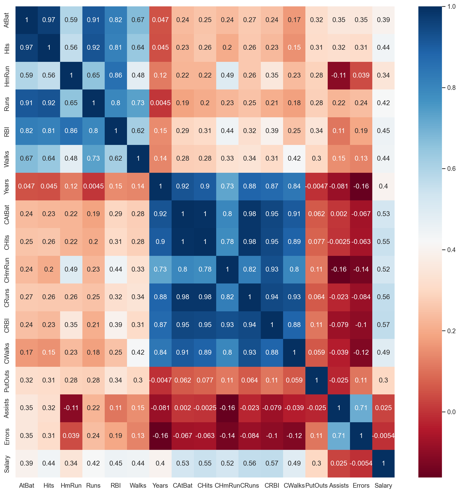
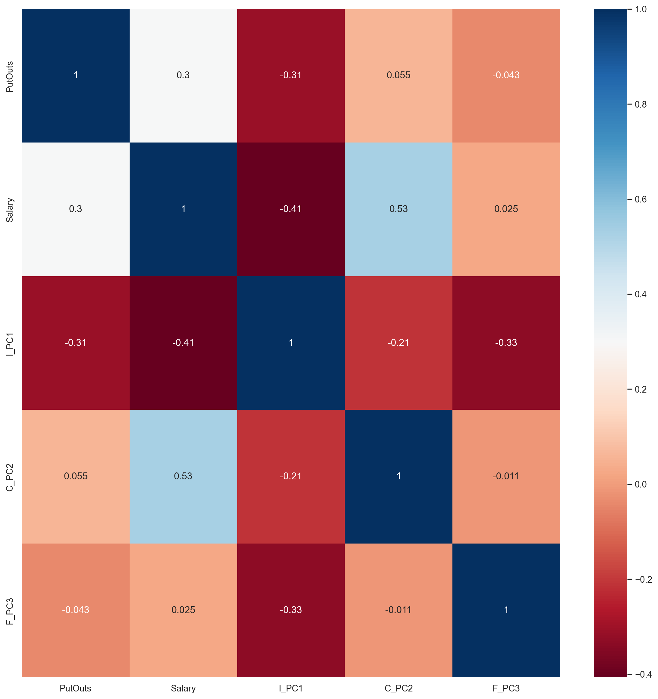
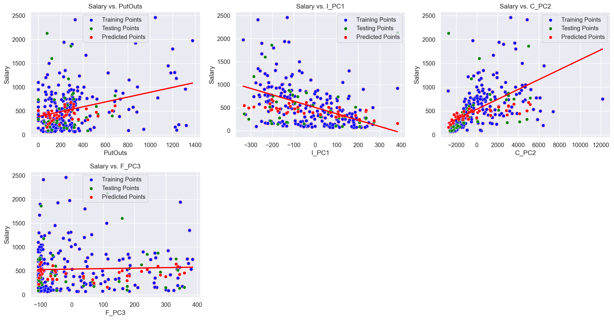
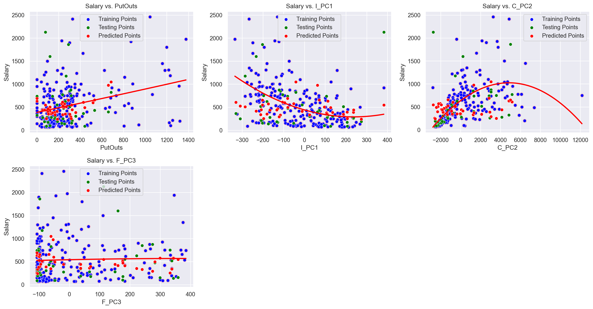
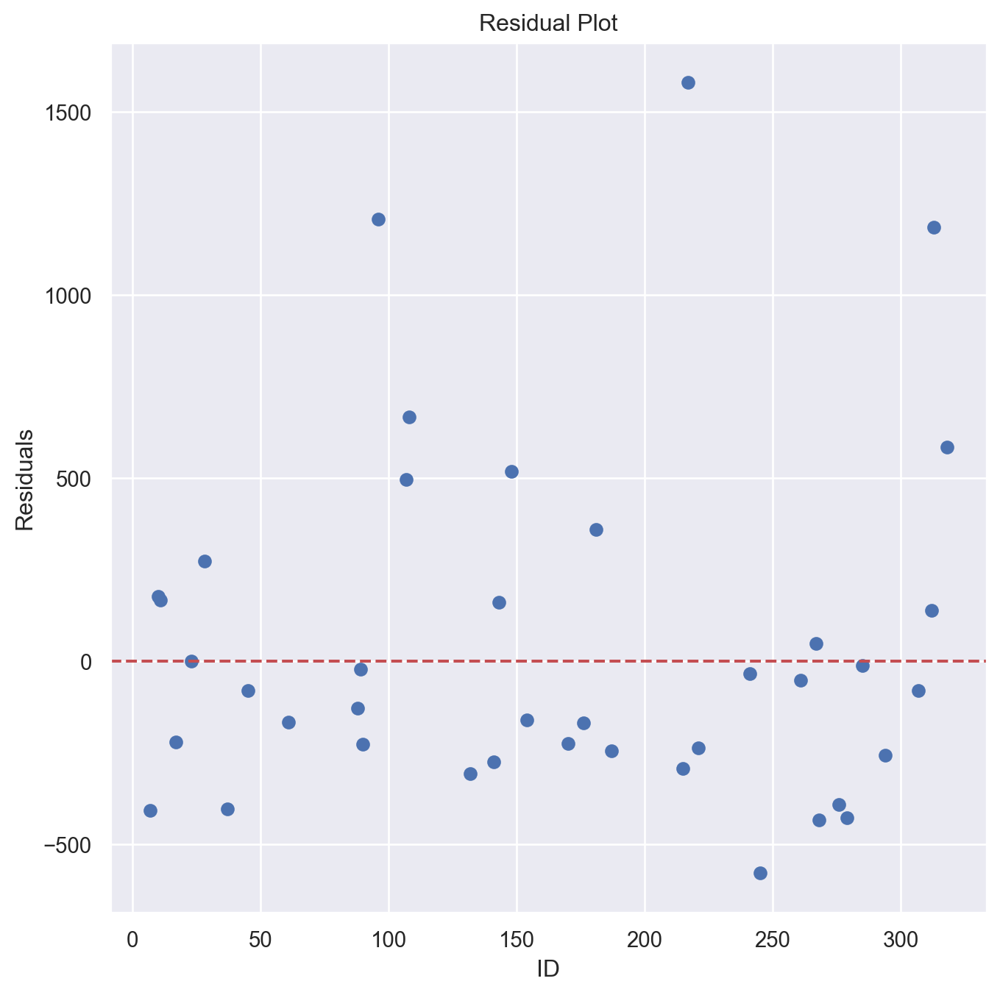

```{python}
import matplotlib.pyplot as plt
import numpy as np
import pandas as pd
import seaborn as sns
from sklearn.svm import SVR
from sklearn.decomposition import PCA
from sklearn.model_selection import train_test_split
from sklearn.preprocessing import StandardScaler
from sklearn.metrics import mean_squared_error
```Author: Daniel Hassler
Data
With Kaggle, I was able to find an MLB (Major League Baseball) dataset consisting of player data from the 1986-1987 seasons (https://www.kaggle.com/datasets/mathchi/hitters-baseball-data). The data itself has many features consisting of individual stats for the season, cumulative career stats, fielding stats, and salary. In total, there are 20 features with 322 entries before preprocessing.
The goal of this notebook is to showcase linear and non-linear regression as a way of predicting salary (in thousands), a continuous variable, for my dataset. But before I run through the regression process, I have to clean the data first and figure out correlations.
One negative influence on regression models is collinearity in the feature space. Collinearity is problematic for several reasons, including overfitting, interpretability, and inefficiency. When there are many features that are highly correlated, this will create a strong negative impact on the performance. So before plugging into the model, I analyzed the correlation matrix consisting of correlations between all the features.
```{python}
df = pd.read_csv("./Hitters.csv")
num_cols = [col for col in df.columns if df[col].dtypes != "O"]
corr = df[num_cols].corr()
sns.set(rc={'figure.figsize': (15, 15)})
sns.heatmap(corr, cmap="RdBu", annot=True)
plt.show()
```
Based on the above correlation matrix, I can see there’s a high correlation between all the individual season player stats (AtBat, Hits, HmRun, Runs, RBI, and Walks), cumulative player stats (CAtBat, CHits, CHmRun, CRuns, CRBI, Years, and CWalks), and finally some fielding stats (Assists, Errors).
One way to remove these strong correlations is to run a dimensionality reduction technique. In this case, I will be using PCA (principal component analysis) seperately on those three highly correlated areas: individual stats, cumulative stats, and fielding.
```{python}
pca_custat = PCA(n_components=1)
pca_indstat = PCA(n_components=1)
pca_fieldstat = PCA(n_components=1)
custat_df = df[["CAtBat", "CHits", "CHmRun", "CRuns", "CRBI", "CWalks"]]
indstat_df = df[["AtBat", "Hits", "HmRun", "Runs", "RBI", "Walks"]]
fieldstat_df = df[["Assists", "Errors"]]
custat_df_pca = pca_custat.fit_transform(custat_df)
indstat_df_pca = pca_indstat.fit_transform(indstat_df)
fieldstat_df_pca = pca_fieldstat.fit_transform(fieldstat_df)
df_reduced = df.drop(columns=["AtBat", "Hits", "HmRun", "Runs", "RBI", "Walks", "CAtBat", "CHits", "CHmRun", "CRuns", "CRBI", "CWalks", "Assists", "Errors"])
df_reduced = df_reduced.drop(columns=["League", "NewLeague", "Division", "Years"])
df_reduced["I_PC1"] = indstat_df_pca
df_reduced["C_PC2"] = custat_df_pca
df_reduced["F_PC3"] = fieldstat_df_pca
df_reduced.dropna(axis=0, inplace=True)
``````{python}
num_cols = [col for col in df_reduced.columns if df_reduced[col].dtypes != "O"]
corr = df_reduced[num_cols].corr()
sns.set(rc={'figure.figsize': (15, 15)})
sns.heatmap(corr, cmap="RdBu", annot=True)
plt.show()
```
After applying PCA and removing other features, I’ve reduced the data from 20 columns to just 5 columns, which is important, as collinearity can negatively effect the performance of regression models. Apart from the collinearity effect, I decided to get rid of discretely labeled binary relationships (labels 0 or 1), as this makes the linear regression model more complex and can only negatively impact the performance. I also discarded years as a feature because it was highly correlated with the PCA of the cumulative stats (r=0.91).
Creating the Training and Test Sets
Since we’re trying to predict salary, I extract salary column from the df_reduced, storing it into labels array y, and dropping that column from the feature data. The X data feature space has dropped from 5 columns to 4 columns, so there are 4 total features. For splitting the data into test and train, I am using sklearn’s train_test_split().
```{python}
df = df_reduced
y = df["Salary"]
X = df.drop(columns="Salary")
X_train, X_test, y_train, y_test = train_test_split(X, y, test_size=0.15, random_state=42)
print(f"Salary STD: ${np.std(y) * 1000:,.2f}")
print(f"Salary Mean: ${np.mean(y) * 1000:,.2f}")
print(f"Salary Low: ${np.min(y) * 1000:,.2f}")
print(f"Salary High: ${np.max(y) * 1000:,.2f}")
```Salary STD: $450,260.22
Salary Mean: $535,925.88
Salary Low: $67,500.00
Salary High: $2,460,000.00Multiple Linear Support Vector Regression (kernel=“linear”)
Now, I will test out multiple linear regression using Sklearn’s SVR (support vector regression) class from the SVM library. Before passing the data into the regression model, I scaled the data using StandardScaler() as this is important for faster computation with regression. For the hyperparameters, I toyed with different C values, which influences the degree of regularization applied to the SVR model. A smaller C value leads to a simpler model, but a larger C value would fit to the training data more closely, which can potentially overfit if the number is too high. For the C value on the linear kernel, my model showed good preformance at C=1.
```{python}
sc = StandardScaler()
X_train_scaled = sc.fit_transform(X_train, y_train)
X_test_scaled = sc.fit_transform(X_test, y_test)
# pca_all = PCA(n_components=1)
# X_train_scaled_pca = pca_all.fit_transform(X_train_scaled)
# X_test_scaled_pca = pca_all.fit_transform(X_test_scaled)
svr_lin = SVR(kernel="linear", C=1, gamma="auto")
svr_lin.fit(X_train_scaled, y_train)
y_pred = svr_lin.predict(X_test_scaled)
```Multiple Linear Regression Visualization
```{python}
plt.figure(figsize=(16, 12))
independent_variables = X_train.columns
dependent_variable = "Salary"
X_test_numpy = X_test.to_numpy()
for i, col in enumerate(independent_variables, 1):
plt.subplot(3, 3, i)
sns.regplot(x=X_train[col],y=y_train,ci=None,color ='red')
sns.scatterplot(data=X_train, x=col, y=y_train, color='blue', label='Training Points')
sns.scatterplot(data=X_test, x=col, y=y_test, color='green', label='Testing Points')
sns.scatterplot(data=X_test, x=col, y=y_pred, color='red', label='Predicted Points')
plt.title(f'{dependent_variable} vs. {col}')
plt.xlabel(col)
plt.ylabel(dependent_variable)
plt.tight_layout()
plt.show()
```
Here is a visualization showing linear regression applied on all of the features in the feature space, which make up the overall prediction. For each feature, the red line represents the function applied, which in this case is linear because I’m using a linear kernel, and the points represent all the different datapoints in the dataset. X_train points are in blue, X_test points are in green with their actual label y_test, and predicted points are in red (the X_test dataset on the y_pred).
Based on the above visualization, it appears that linear regression works very well for all the features, although in any case, outliers are a problem. It is also worth noting that changing the C value does change the results, so modifying that may improve preformance with more fine-tuning. Below, I have outputed some metrics on the model:
```{python}
result_df = pd.DataFrame(columns=["id", "actual", "predicted"])
for i, actual, predicted in zip(y_test.index, y_test, y_pred):
entry = [i, actual, predicted]
df_entry = pd.DataFrame(entry, index=["id", "actual", "predicted"]).T
result_df = pd.concat((result_df, df_entry))
#print(result_df)
difference = abs(result_df["actual"] - result_df["predicted"])
print(f"Cumulative Difference: ${np.sum(difference) * 1000:,.2f}")
print(f"Min Difference: ${np.min(difference) * 1000:,.2f}")
print(f"Max Difference: ${np.max(difference) * 1000:,.2f}")
print(f"Average Difference: ${np.mean(difference) * 1000:,.2f}")
print(f"Std Difference: ${np.std(difference) * 1000:,.2f}")
print(f"Mean Squared Error: ${mean_squared_error(y_test, y_pred):,.2f}")
```Cumulative Difference: $10,792,084.13
Min Difference: $19,061.95
Max Difference: $1,968,301.30
Average Difference: $269,802.10
Std Difference: $361,894.28
Mean Squared Error: $203,760.65Based on this data, the total difference (sum of all the differences) between the actual and predicted outputs could be better, as the average difference between the labels is around 270 = $270,000. The MSE is a common metric used in these types of problems, and my MSE(mean squared error) score is around 205 ($205,000), which is a respectable MSE value for this dataset due to its high standard deviation at ($450,260.22).
```{python}
plt.figure(figsize=(8,8))
residuals = result_df['actual'] - result_df['predicted']
plt.scatter(result_df['id'], residuals)
plt.axhline(y=0, color='r', linestyle='--')
plt.xlabel('ID')
plt.ylabel('Residuals')
plt.title('Residual Plot')
plt.show()
```
Above is a visualization showing how far the differences are for each value in the test set (the residuals). 0 means no difference between the actual and the predicted, any number below 0 means the predicted value was higher than the actual value, and any number above 0 means the predicted value was lower than the actual value.
Multiple Non-Linear Support Vector Regression (kernel=“poly”)
Now I run SVR on a non-linear kernel and assess its comparison to a linear kernel. Since real world data has a lot of non-linearity, this comparison is worth attempting.
```{python}
svr_poly = SVR(kernel="poly", degree=2, C=75, gamma="scale")
svr_poly.fit(X_train_scaled, y_train)
y_pred = svr_poly.predict(X_test_scaled)
result_df = pd.DataFrame(columns=["id", "actual", "predicted"])
for i, actual, predicted in zip(y_test.index, y_test, y_pred):
entry = [i, actual, predicted]
df_entry = pd.DataFrame(entry, index=["id", "actual", "predicted"]).T
result_df = pd.concat((result_df, df_entry))
#print(result_df)
difference = abs(result_df["actual"] - result_df["predicted"])
print(f"Cumulative Difference: ${np.sum(difference) * 1000:,.2f}")
print(f"Min Difference: ${np.min(difference) * 1000:,.2f}")
print(f"Max Difference: ${np.max(difference) * 1000:,.2f}")
print(f"Average Difference: ${np.mean(difference) * 1000:,.2f}")
print(f"Std Difference: ${np.std(difference) * 1000:,.2f}")
print(f"Mean Squared Error: ${mean_squared_error(y_test, y_pred):,.2f}")
```Cumulative Difference: $13,385,640.30
Min Difference: $798.03
Max Difference: $1,581,505.51
Average Difference: $334,641.01
Std Difference: $330,986.90
Mean Squared Error: $221,536.94Based on the model run through with a polynomial kernel, the results are overall noticeably worse than the linear kernel, but not by a whole lot. Although, it is worth noting that the C value is crucial in this result. I was trying to balance the trade-off between conforming to the function and simplicity. For the polynomial degree, I decide to go with 2, as 1 is linear and 3 didn’t preform as anticipated, as the function plotted didn’t represent some of the features as well as 2.
Multiple Non-Linear Regression Visualization
```{python}
plt.figure(figsize=(16, 12))
independent_variables = X_train.columns
dependent_variable = "Salary"
X_test_numpy = X_test.to_numpy()
for i, col in enumerate(independent_variables, 1):
plt.subplot(3, 3, i)
sns.regplot(x=X_train[col],y=y_train,ci=None,color ='red', order=svr_poly.degree)
sns.scatterplot(data=X_train, x=col, y=y_train, color='blue', label='Training Points')
sns.scatterplot(data=X_test, x=col, y=y_test, color='green', label='Testing Points')
sns.scatterplot(data=X_test, x=col, y=y_pred, color='red', label='Predicted Points')
plt.title(f'{dependent_variable} vs. {col}')
plt.xlabel(col)
plt.ylabel(dependent_variable)
plt.tight_layout()
plt.show()
```
Based on the above visualzation, using a polynomial function with degree 2, shows interesting results. For the Salary vs PutOuts plot, the data plotted resembles a linear kernel, but in actuality it’s a very zoomed in polynomial kernel. The Salary vs I_PC1 showed a curve which I expected. It starts off at a peak and then lowers like a parabolic function (degree 2). The Salary vs C_PC2 plot is interesting in the sense that it’s a negative parabola; I would say this is not a fully representative curve as it seems to be fitting to the outlier at the end of the plot. Finally, the Salary vs F_PC3 plot seems to be similar to the first plot as it resembles more of a linear kernel.
```{python}
plt.figure(figsize=(8,8))
residuals = result_df['actual'] - result_df['predicted']
plt.scatter(result_df['id'], residuals)
plt.axhline(y=0, color='r', linestyle='--')
plt.xlabel('ID')
plt.ylabel('Residuals')
plt.title('Residual Plot')
plt.show()
```
Above is the residual plot for this model with the same setup as the linear kernel one.
Discussion and Improvements
In actuality, it appears to me that the poly non-linear kernel represents the data better for certain features even though it doesn’t perform as well against the linear kernel. I believe the tradeoff to this approach highly depends on the C value for both approaches and requires more hyperparameter awareness and optimization.
In terms of features, I believe all of these features have strong presuasion in determing an MLB player’s salary, but there is one flaw. Some players, regardless of preformance, are more “famous” than other players. It is likely that more famous players have higher salaries simply because they generate more revenue for the teams they play for, but that doesn’t necessarily mean the player’s popularity is correlated with skill. This is the reason why I believe there are outliers in this dataset. If there were a way to accurately determine popularity, that would be a key feature in predicting salary as well for this particular domain. Speaking of outliers, I would also like to point out that outliers can have a significant impact on these regression models. Depending on the case, deleting outliers may be a valid option, but that should come with caution as deleting data can result in loss of valuable information.
ML-Blog-Posts - Comparing Multiple Linear and Non-Linear Regression on MLB Data ML-Blog-Posts - Comparing Multiple Linear and Non-Linear Regression on MLB Data ML-Blog-Posts - Comparing Multiple Linear and Non-Linear Regression on MLB Data ML-Blog-Posts